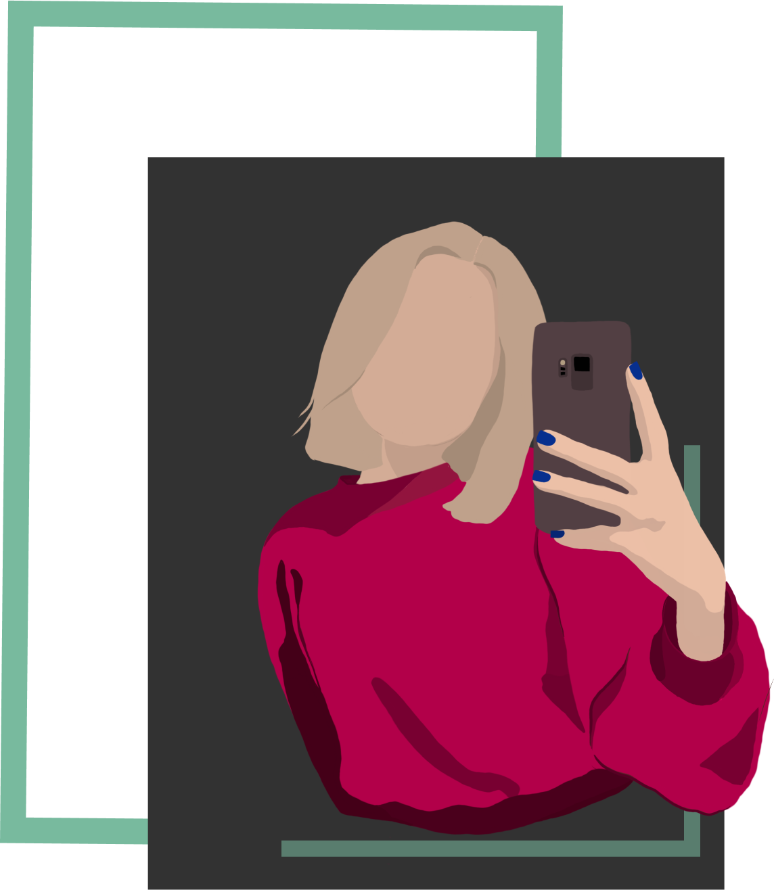

KILKA SŁÓW O NAS
Moim wielkim marzeniem jest rozpoczęcie pracy jako programista.
Stawiam mocny nacisk na jakość swoich prac, dlatego nieustannie
szlifuję i doskonale swoje umiejętności.

Projektowaniem graficznym zajmuję się od niedawna, natomiast małe
doświadczenie wypływa to na jakość moich prac. Stawiam na rozwój
własny ucząc się nowych rzeczy i uczęszczając na kursy. Na codzień
pracuję w programach Procreate, Adobe Ilustrator oraz Figma.